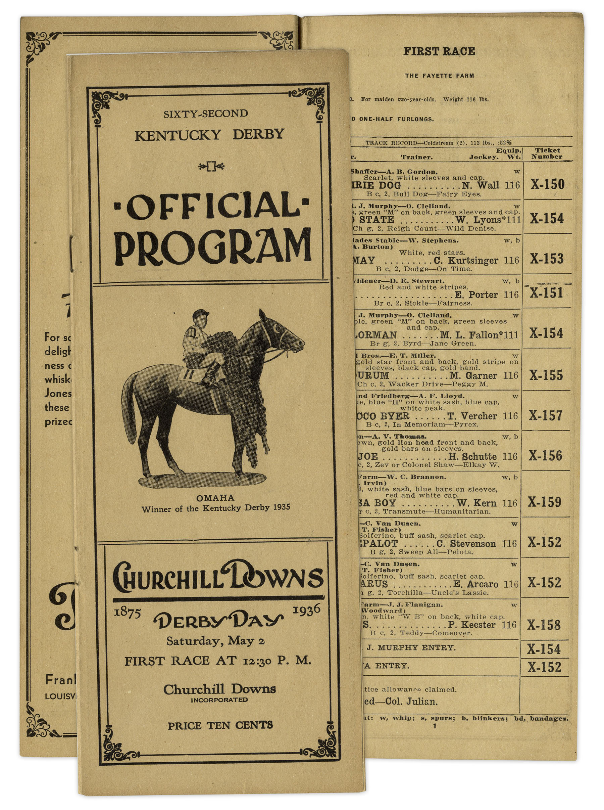
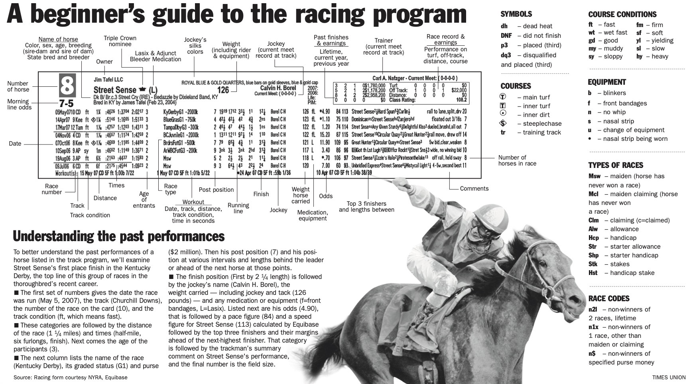

Basics of Betting
In my younger years, my betting strategy was built on navigating and experimenting with the information provided by previous performance tables in daily racing programs. This includes odds, career starts, trainer and jockey, among other aspects.
The most common and low stakes racing wagers are the
- Win
- Win Place Show, one horse that can place anywhere 1st through 3rd
- Exacta, first two places in order
- Trifecta, first three places in order
Most bets cost $1 to place and although not easy, it's low stakes and high reward to place a
- Superfecta, first four places in order, minimum bet of $0.10
On top of this, any bet made in the exact order of finish, can be made a "box," where the order no longer matters. But these bets are often 2-3x as much to place. Larger chance of winning, more you pay, less you earn.
If you're like my dad and enjoy losing and low-risk bets equally, you'll place an insane amount of "10-Cent Superfectas" on each race, trying to guess tens of combinations for the first four places. In all the years we went to the races, I think he's won a Superfecta once or twice.


The best time to play a Superfecta to maximize your profits is when there is a large field to choose from. To give you perspective, in a 12-horse race, there are 11,800 superfecta combinations possible. With a 10-Cent denomination, that is a $1,180 bet. So imagine that once you've mastered the art of probability, how much you could win by placing $1 Superfectas!
The lowest-paying $1 Superfecta to be bet on the Kentucky Derby occurred in 1997 on Silver Charm, a horse with 4/1 odds. Bettors won $350.00 – a considerable prize back then and today. But in the last 20 years, the Superfecta has paid a median prize of $40,000. The three greatest payouts reached $101,285, $557,000, and $864,253 respectively.
As mentioned, this is dependent upon the horse's odds, which are determined by the total money wagered on the horse. When the odds are greater, the horse is considered a "longshot," and the payout rises directly and considerably. Horses with low odds have a higher chance of winning and therefore, pay much less as a reward for predicting their success. The next question is, how do you know who to bet on?
In short: Earnings are dependent on odds, which are determined by the total money wagered on the horse. If everyone is betting on a particular horse, the odds decrease and perceived chances of winning increases,
and everyone wins less $ since the earning pool is split among more of you!
Research Questions
To retrieve this data, I performed a simple HTML webscrape on Wikipedia tables from the Kentucky Derby page.
I manually added each horse's Triple Crown status, the state they were bred in, their odds, starts, wins/places/shows, chances they placed 1st through 3rd in their races, and the superfecta payouts for horses since the late 90s.
These are the variables in the dataset
Based on horse:
- Triple Crown status
- State bred in
- Odds
- Career starts
- Career wins, places, shows
- WPS ratio (wps/starts)
Based on human:
- Jockey
- Trainer
- Owner
- Jockey's total derby wins
- Trainer's total derby wins
Situational:
- Track condition
- Time
- Superfecta payout
Moreover, I aimed to answer these questions:
- Are the same trainers winning more derbies?
- Which era has the most Triple Crown winners?
- Racehorses retire early. Do career starts indicate experience?
- Is betting on the longshot worth it?